Что приготовить в духовке
Запеканки, мясо, рыба и выпечка в духовке. 146 рецептов: у каждого время, калории и БЖУ на порцию, пошаговые инструкции и список покупок
 Горячие бутерброды с помидором и сыром в духовке15 мин · 379 ккал · Б 16 г · Завтрак
Горячие бутерброды с помидором и сыром в духовке15 мин · 379 ккал · Б 16 г · Завтрак Мидии, запечённые с сыром и чесноком20 мин · 532 ккал · Б 46 г · Второе блюдо
Мидии, запечённые с сыром и чесноком20 мин · 532 ккал · Б 46 г · Второе блюдо Фаттуш - ливанский салат с хрустящей лепёшкой20 мин · 206 ккал · Б 5 г · Салат
Фаттуш - ливанский салат с хрустящей лепёшкой20 мин · 206 ккал · Б 5 г · Салат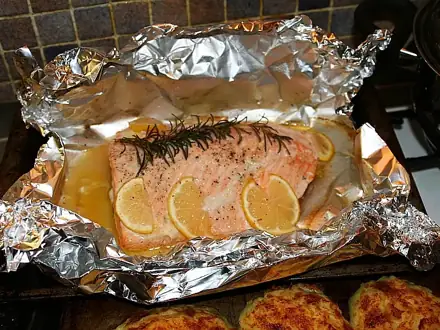
Горбуша в духовке в фольге25 мин · 335 ккал · Б 41 г · Второе блюдо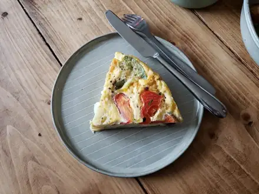
Сырный омлет-фриттата25 мин · 354 ккал · Б 24 г · Завтрак Мини-пиццы на лаваше25 мин · 375 ккал · Б 20 г · Закуска
Мини-пиццы на лаваше25 мин · 375 ккал · Б 20 г · Закуска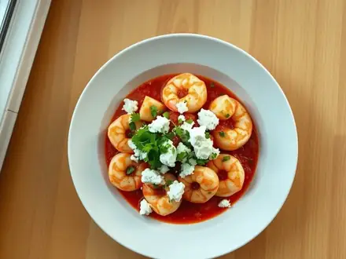
Креветки саганаки с фетой25 мин · 319 ккал · Б 33 г · Второе блюдо Лосось в медово-горчичном соусе в духовке25 мин · 419 ккал · Б 35 г · Второе блюдо
Лосось в медово-горчичном соусе в духовке25 мин · 419 ккал · Б 35 г · Второе блюдо- Треска в сырной корочке в духовке25 мин · 283 ккал · Б 37 г · Второе блюдо
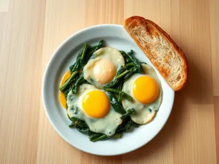
Яйца со шпинатом и сыром в духовке25 мин · 576 ккал · Б 30 г · Второе блюдо- Крок-месье25 мин · 755 ккал · Б 31 г · Второе блюдо
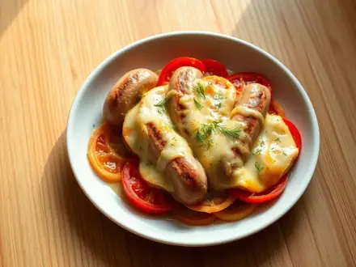
Сосиски, запечённые с помидорами и сыром25 мин · 464 ккал · Б 22 г · Второе блюдо Сосиски в беконе с сыром в духовке25 мин · 604 ккал · Б 28 г · Второе блюдо
Сосиски в беконе с сыром в духовке25 мин · 604 ккал · Б 28 г · Второе блюдо- Горбуша в апельсиновом соусе в духовке25 мин · 376 ккал · Б 42 г · Второе блюдо
 Омлетный рулет с ветчиной и сыром в духовке25 мин · 406 ккал · Б 26 г · Второе блюдо
Омлетный рулет с ветчиной и сыром в духовке25 мин · 406 ккал · Б 26 г · Второе блюдо Яйца кокот с ветчиной и сливками25 мин · 440 ккал · Б 25 г · Второе блюдо
Яйца кокот с ветчиной и сливками25 мин · 440 ккал · Б 25 г · Второе блюдо Фриттата с беконом и помидорами25 мин · 424 ккал · Б 27 г · Второе блюдо
Фриттата с беконом и помидорами25 мин · 424 ккал · Б 27 г · Второе блюдо Бугиурди - фета, запечённая с помидорами и перцем25 мин · 387 ккал · Б 20 г · Второе блюдо
Бугиурди - фета, запечённая с помидорами и перцем25 мин · 387 ккал · Б 20 г · Второе блюдо- Яйца, запечённые в авокадо25 мин · 515 ккал · Б 23 г · Второе блюдо
- Хачапури из батона с яйцом в духовке25 мин · 657 ккал · Б 29 г · Второе блюдо
 Хрустящие куриные крылья в духовке30 мин · 364 ккал · Б 32 г · Второе блюдо
Хрустящие куриные крылья в духовке30 мин · 364 ккал · Б 32 г · Второе блюдо Куриные отбивные с помидорами и сыром в духовке30 мин · 442 ккал · Б 59 г · Второе блюдо
Куриные отбивные с помидорами и сыром в духовке30 мин · 442 ккал · Б 59 г · Второе блюдо- Куриное филе в медово-горчичном соусе в духовке30 мин · 329 ккал · Б 49 г · Второе блюдо
- Курица, запечённая с брокколи и сыром30 мин · 481 ккал · Б 53 г · Второе блюдо
- Рыбные палочки домашние в духовке30 мин · 295 ккал · Б 34 г · Второе блюдо
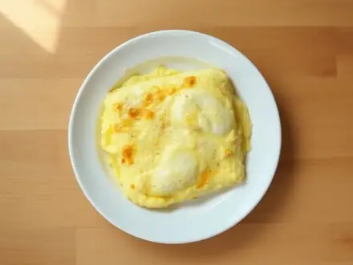
Рыба, запечённая с омлетом, как в детском саду30 мин · 245 ккал · Б 32 г · Второе блюдо- Запеканка с тунцом и брокколи30 мин · 314 ккал · Б 29 г · Второе блюдо
- Кабачки, запечённые с творогом и сыром30 мин · 487 ккал · Б 37 г · Второе блюдо
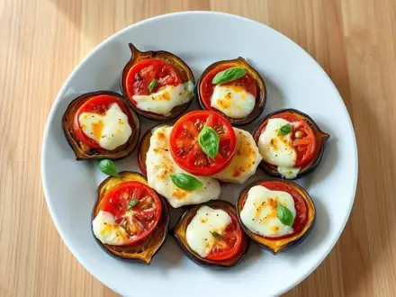
Баклажаны, запечённые с помидорами и сыром30 мин · 414 ккал · Б 19 г · Второе блюдо- Запеканка из брокколи с яйцом и сыром30 мин · 466 ккал · Б 33 г · Второе блюдо
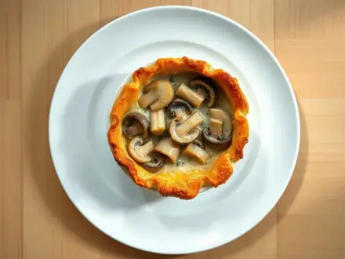
Жюльен с грибами30 мин · 559 ккал · Б 28 г · Второе блюдо Запеканка из пюре с курицей и сыром30 мин · 615 ккал · Б 41 г · Второе блюдо
Запеканка из пюре с курицей и сыром30 мин · 615 ккал · Б 41 г · Второе блюдо Ленивая ачма из лаваша30 мин · 531 ккал · Б 24 г · Второе блюдо
Ленивая ачма из лаваша30 мин · 531 ккал · Б 24 г · Второе блюдо Энчилада с курицей30 мин · 767 ккал · Б 48 г · Второе блюдо
Энчилада с курицей30 мин · 767 ккал · Б 48 г · Второе блюдо Жульен с курицей и грибами30 мин · 410 ккал · Б 37 г · Второе блюдо
Жульен с курицей и грибами30 мин · 410 ккал · Б 37 г · Второе блюдо Мясные гнёзда с грибами и сыром в духовке30 мин · 527 ккал · Б 32 г · Второе блюдо
Мясные гнёзда с грибами и сыром в духовке30 мин · 527 ккал · Б 32 г · Второе блюдо Пицца из фарша без теста в духовке30 мин · 507 ккал · Б 34 г · Второе блюдо
Пицца из фарша без теста в духовке30 мин · 507 ккал · Б 34 г · Второе блюдо Сосиски в слоёном тесте в духовке30 мин · 652 ккал · Б 19 г · Второе блюдо
Сосиски в слоёном тесте в духовке30 мин · 652 ккал · Б 19 г · Второе блюдо- Кабачки, запечённые с ветчиной и сыром30 мин · 403 ккал · Б 19 г · Второе блюдо
 Рыба по-французски из минтая в духовке30 мин · 469 ккал · Б 44 г · Второе блюдо
Рыба по-французски из минтая в духовке30 мин · 469 ккал · Б 44 г · Второе блюдо Жюльен с креветками и грибами30 мин · 395 ккал · Б 31 г · Второе блюдо
Жюльен с креветками и грибами30 мин · 395 ккал · Б 31 г · Второе блюдо- Минтай, запечённый с грибами в сметане30 мин · 413 ккал · Б 42 г · Второе блюдо
 Кальмары, фаршированные яйцом и сыром, в духовке30 мин · 681 ккал · Б 60 г · Второе блюдо
Кальмары, фаршированные яйцом и сыром, в духовке30 мин · 681 ккал · Б 60 г · Второе блюдо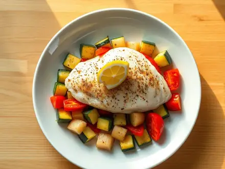
Хек, запечённый с овощами в духовке30 мин · 335 ккал · Б 36 г · Второе блюдо Шашлычки из сёмги с овощами в духовке30 мин · 442 ккал · Б 35 г · Второе блюдо
Шашлычки из сёмги с овощами в духовке30 мин · 442 ккал · Б 35 г · Второе блюдо- Перцы, фаршированные тунцом и сыром30 мин · 282 ккал · Б 28 г · Второе блюдо
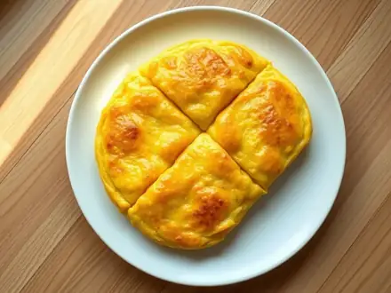
Драчена - русский омлет со сметаной в духовке30 мин · 299 ккал · Б 15 г · Второе блюдо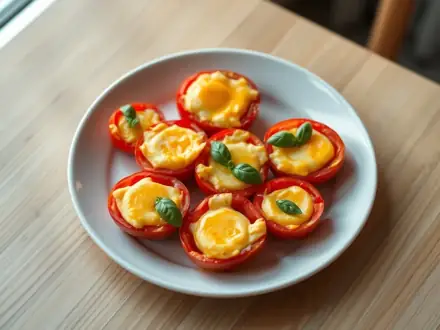
Яйца, запечённые в помидорах с сыром30 мин · 351 ккал · Б 23 г · Второе блюдо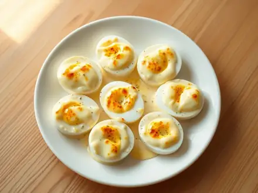
Яйца Морне под сырным соусом30 мин · 492 ккал · Б 27 г · Второе блюдо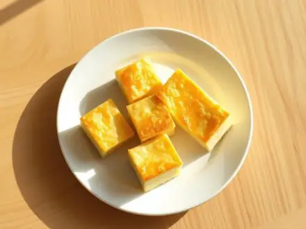
Омлет как в детском саду в духовке30 мин · 337 ккал · Б 21 г · Второе блюдо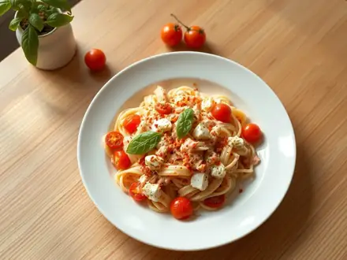
Паста с запечённой фетой и помидорами черри30 мин · 606 ккал · Б 22 г · Второе блюдо Тартифлет - картошка с беконом и сыром под сливками30 мин · 776 ккал · Б 31 г · Второе блюдо
Тартифлет - картошка с беконом и сыром под сливками30 мин · 776 ккал · Б 31 г · Второе блюдо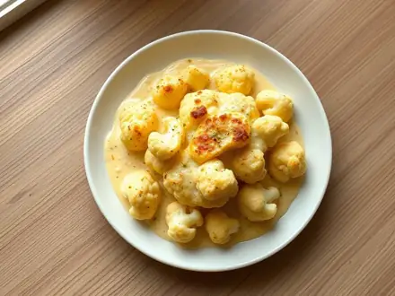
Цветная капуста под сырным соусом в духовке30 мин · 390 ккал · Б 21 г · Второе блюдо- Кабачковые лодочки с грибами и сыром в духовке30 мин · 435 ккал · Б 22 г · Второе блюдо
 Тёплый салат с запечённой тыквой, шпинатом и фетой30 мин · 499 ккал · Б 21 г · Салат
Тёплый салат с запечённой тыквой, шпинатом и фетой30 мин · 499 ккал · Б 21 г · Салат Запеканка из чёрствого хлеба с ветчиной и сыром30 мин · 588 ккал · Б 30 г · Второе блюдо
Запеканка из чёрствого хлеба с ветчиной и сыром30 мин · 588 ккал · Б 30 г · Второе блюдо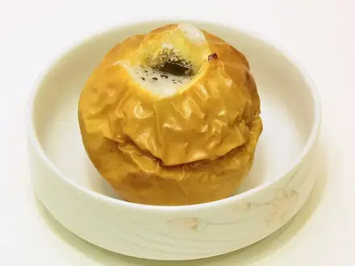
Запечённые яблоки с мёдом и орехами35 мин · 119 ккал · Б 1 г · Десерт- Цветная капуста в духовке35 мин · 209 ккал · Б 7 г · Гарнир
 Куриные наггетсы в духовке35 мин · 348 ккал · Б 40 г · Второе блюдо
Куриные наггетсы в духовке35 мин · 348 ккал · Б 40 г · Второе блюдо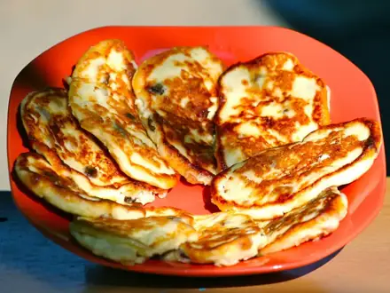
Сырники в духовке без муки35 мин · 260 ккал · Б 25 г · Завтрак- Постное овсяное печенье35 мин · 347 ккал · Б 6 г · Десерт
 Запеканка из макарон с сыром и яйцом35 мин · 358 ккал · Б 19 г · Второе блюдо
Запеканка из макарон с сыром и яйцом35 мин · 358 ккал · Б 19 г · Второе блюдо- Овсяное печенье40 мин · 284 ккал · Б 5 г · Выпечка
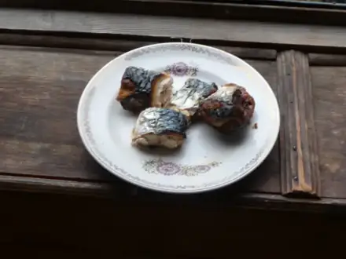
Скумбрия в духовке40 мин · 429 ккал · Б 36 г · Второе блюдо Фаршированные шампиньоны в духовке40 мин · 192 ккал · Б 13 г · Закуска
Фаршированные шампиньоны в духовке40 мин · 192 ккал · Б 13 г · Закуска Цезарь с курицей40 мин · 626 ккал · Б 45 г · Салат
Цезарь с курицей40 мин · 626 ккал · Б 45 г · Салат- Домашние наггетсы из индейки40 мин · 308 ккал · Б 34 г · Второе блюдо
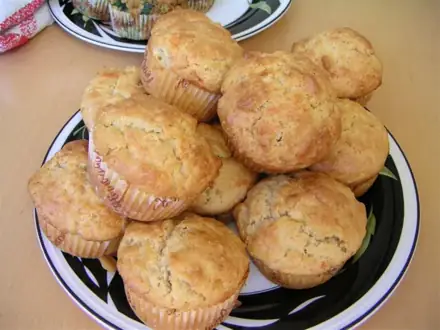
Творожные маффины40 мин · 236 ккал · Б 18 г · Выпечка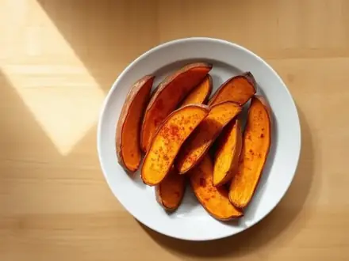
Батат дольками в духовке с паприкой40 мин · 245 ккал · Б 3 г · Гарнир- Куриные котлеты в духовке45 мин · 265 ккал · Б 25 г · Второе блюдо
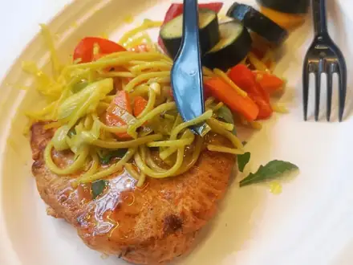
Куриная грудка в духовке в фольге45 мин · 281 ккал · Б 48 г · Второе блюдо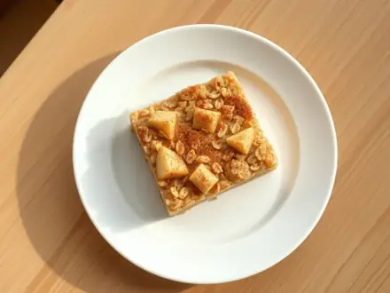
Овсянка, запечённая с яблоком и корицей45 мин · 346 ккал · Б 12 г · Завтрак- Морковь, запечённая в мёде, в духовке45 мин · 186 ккал · Б 3 г · Гарнир
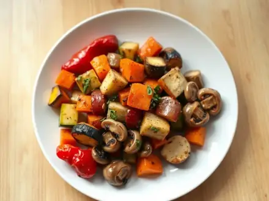
Овощи, запечённые в духовке с травами45 мин · 183 ккал · Б 5 г · Гарнир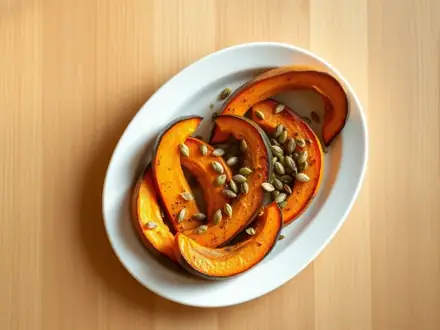
Тыква, запечённая дольками в духовке45 мин · 128 ккал · Б 3 г · Гарнир Картофель дольками в духовке50 мин · 290 ккал · Б 5 г · Гарнир
Картофель дольками в духовке50 мин · 290 ккал · Б 5 г · Гарнир Творожная запеканка без сахара для малышей50 мин · 237 ккал · Б 22 г · Завтрак
Творожная запеканка без сахара для малышей50 мин · 237 ккал · Б 22 г · Завтрак Куриные рулетики с сыром50 мин · 321 ккал · Б 44 г · Второе блюдо
Куриные рулетики с сыром50 мин · 321 ккал · Б 44 г · Второе блюдо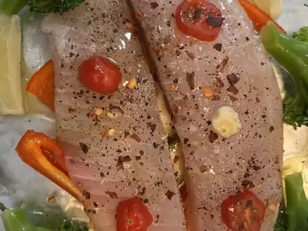
Минтай в духовке с овощами50 мин · 213 ккал · Б 26 г · Второе блюдо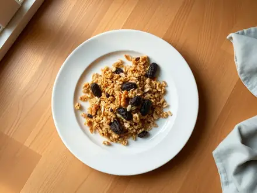
Гранола домашняя в духовке50 мин · 352 ккал · Б 8 г · Завтрак Шоколадные маффины с кусочками шоколада50 мин · 265 ккал · Б 5 г · Выпечка
Шоколадные маффины с кусочками шоколада50 мин · 265 ккал · Б 5 г · Выпечка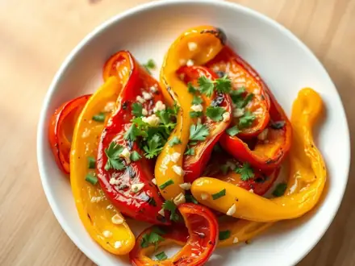
Печёный болгарский перец с чесноком55 мин · 134 ккал · Б 3 г · Гарнир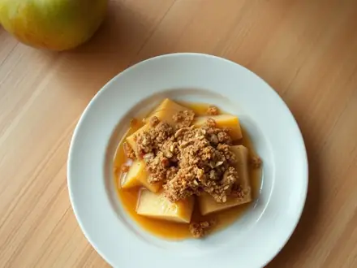
Яблочный крамбл с овсяной крошкой55 мин · 449 ккал · Б 5 г · Десерт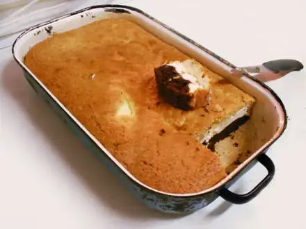
Творожная запеканка60 мин · 244 ккал · Б 18 г · Завтрак Шарлотка с яблоками60 мин · 251 ккал · Б 6 г · Выпечка
Шарлотка с яблоками60 мин · 251 ккал · Б 6 г · Выпечка Самса из слоёного теста60 мин · 478 ккал · Б 17 г · Выпечка
Самса из слоёного теста60 мин · 478 ккал · Б 17 г · Выпечка Киш лорен60 мин · 631 ккал · Б 23 г · Выпечка
Киш лорен60 мин · 631 ккал · Б 23 г · Выпечка Мясо по-французски60 мин · 615 ккал · Б 31 г · Второе блюдо
Мясо по-французски60 мин · 615 ккал · Б 31 г · Второе блюдо Хлебный пудинг60 мин · 474 ккал · Б 15 г · Десерт
Хлебный пудинг60 мин · 474 ккал · Б 15 г · Десерт Гурьевская каша60 мин · 536 ккал · Б 13 г · Завтрак
Гурьевская каша60 мин · 536 ккал · Б 13 г · Завтрак Салат из печёных перцев с чесноком и кинзой60 мин · 161 ккал · Б 3 г · Салат
Салат из печёных перцев с чесноком и кинзой60 мин · 161 ккал · Б 3 г · Салат Слойки с ветчиной и сыром из готового теста60 мин · 368 ккал · Б 13 г · Выпечка
Слойки с ветчиной и сыром из готового теста60 мин · 368 ккал · Б 13 г · Выпечка Брауни шоколадный с орехами60 мин · 335 ккал · Б 5 г · Десерт
Брауни шоколадный с орехами60 мин · 335 ккал · Б 5 г · Десерт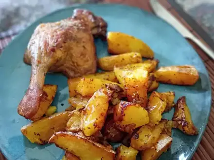
Куриные бёдра с картошкой в духовке65 мин · 765 ккал · Б 51 г · Второе блюдо- Картофель, запечённый целиком в фольге, со сметаной65 мин · 319 ккал · Б 6 г · Гарнир
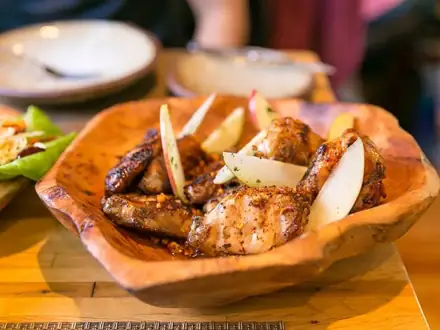
Куриные крылья в медово-соевом соусе70 мин · 366 ккал · Б 31 г · Второе блюдо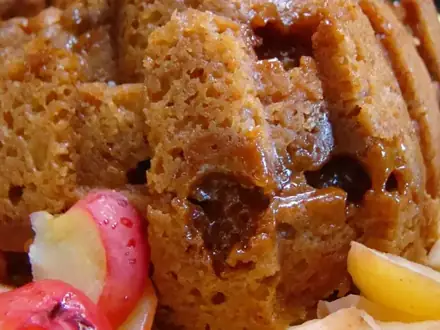
Постный пирог с яблоками70 мин · 346 ккал · Б 4 г · Выпечка Картофель-гармошка в духовке (хассельбек)70 мин · 316 ккал · Б 7 г · Гарнир
Картофель-гармошка в духовке (хассельбек)70 мин · 316 ккал · Б 7 г · Гарнир- Песочное печенье на сливочном масле70 мин · 302 ккал · Б 4 г · Выпечка
 Сосиски в тесте в духовке70 мин · 275 ккал · Б 10 г · Выпечка
Сосиски в тесте в духовке70 мин · 275 ккал · Б 10 г · Выпечка Рататуй75 мин · 186 ккал · Б 4 г · Второе блюдо
Рататуй75 мин · 186 ккал · Б 4 г · Второе блюдо Куриные шашлычки в духовке75 мин · 232 ккал · Б 37 г · Второе блюдо
Куриные шашлычки в духовке75 мин · 232 ккал · Б 37 г · Второе блюдо- Творожная запеканка с тыквой75 мин · 263 ккал · Б 18 г · Завтрак
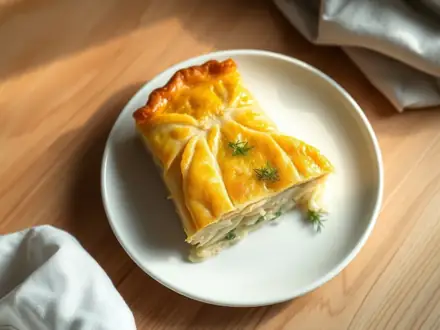
Заливной пирог с капустой на кефире75 мин · 213 ккал · Б 10 г · Выпечка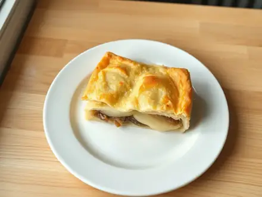
Рыбный пирог из консервов с картошкой75 мин · 333 ккал · Б 14 г · Выпечка Кугель картофельный80 мин · 290 ккал · Б 7 г · Гарнир
Кугель картофельный80 мин · 290 ккал · Б 7 г · Гарнир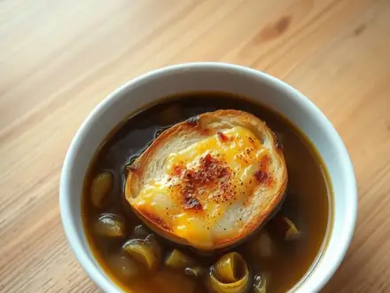
Луковый суп по-французски с сырными гренками80 мин · 388 ккал · Б 14 г · Суп Картофельный гратен со сливками в духовке85 мин · 381 ккал · Б 11 г · Гарнир
Картофельный гратен со сливками в духовке85 мин · 381 ккал · Б 11 г · Гарнир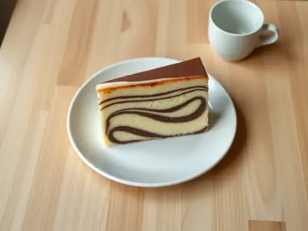
Пирог «Зебра» на сметане85 мин · 343 ккал · Б 7 г · Выпечка- Бездрожжевой хлеб на кефире в духовке85 мин · 219 ккал · Б 7 г · Выпечка
 Курица целиком в духовке100 мин · 502 ккал · Б 37 г · Второе блюдо
Курица целиком в духовке100 мин · 502 ккал · Б 37 г · Второе блюдо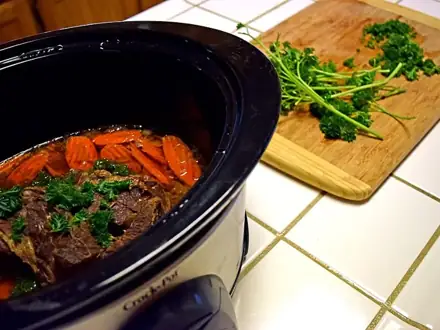
Жаркое со свининой в горшочках100 мин · 533 ккал · Б 24 г · Второе блюдо Эчпочмак100 мин · 721 ккал · Б 27 г · Выпечка
Эчпочмак100 мин · 721 ккал · Б 27 г · Выпечка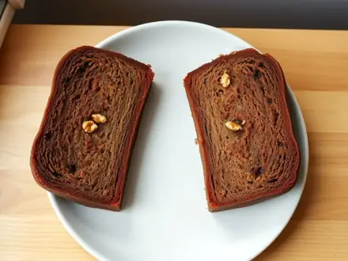
Банановый хлеб (кекс с бананами)100 мин · 248 ккал · Б 4 г · Выпечка Имбирное печенье с мёдом100 мин · 253 ккал · Б 4 г · Выпечка
Имбирное печенье с мёдом100 мин · 253 ккал · Б 4 г · Выпечка- Тёртый пирог с вареньем110 мин · 399 ккал · Б 5 г · Выпечка
 Хачапури по-аджарски110 мин · 521 ккал · Б 24 г · Выпечка
Хачапури по-аджарски110 мин · 521 ккал · Б 24 г · Выпечка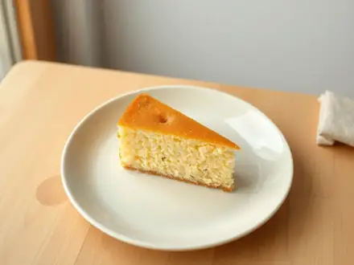
Манник на кефире115 мин · 283 ккал · Б 6 г · Выпечка Чанахи в горшочках120 мин · 499 ккал · Б 30 г · Второе блюдо
Чанахи в горшочках120 мин · 499 ккал · Б 30 г · Второе блюдо- Пампушки с чесноком120 мин · 347 ккал · Б 8 г · Выпечка
 Лазанья с мясом120 мин · 744 ккал · Б 35 г · Второе блюдо
Лазанья с мясом120 мин · 744 ккал · Б 35 г · Второе блюдо Мусака120 мин · 563 ккал · Б 25 г · Второе блюдо
Мусака120 мин · 563 ккал · Б 25 г · Второе блюдо Медовик упрощённый120 мин · 485 ккал · Б 8 г · Десерт
Медовик упрощённый120 мин · 485 ккал · Б 8 г · Десерт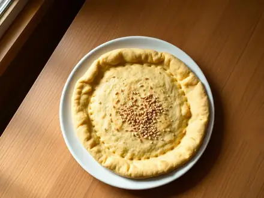
Узбекская лепёшка в духовке120 мин · 268 ккал · Б 8 г · Выпечка Кекс «Столичный» с изюмом120 мин · 326 ккал · Б 5 г · Выпечка
Кекс «Столичный» с изюмом120 мин · 326 ккал · Б 5 г · Выпечка Пицца домашняя в духовке на дрожжевом тесте120 мин · 399 ккал · Б 20 г · Выпечка
Пицца домашняя в духовке на дрожжевом тесте120 мин · 399 ккал · Б 20 г · Выпечка Фокачча с чесноком и травами135 мин · 286 ккал · Б 7 г · Выпечка
Фокачча с чесноком и травами135 мин · 286 ккал · Б 7 г · Выпечка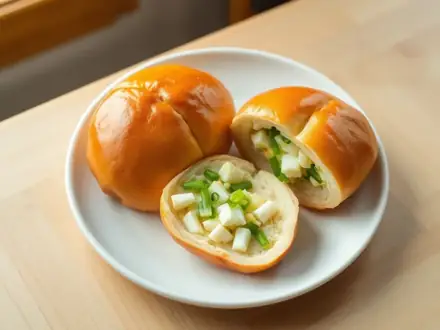
Пирожки печёные с яйцом и зелёным луком140 мин · 376 ккал · Б 15 г · Выпечка- Плюшки московские с сахаром140 мин · 305 ккал · Б 7 г · Выпечка
 Курник упрощённый с курицей и картошкой150 мин · 482 ккал · Б 23 г · Выпечка
Курник упрощённый с курицей и картошкой150 мин · 482 ккал · Б 23 г · Выпечка- Ватрушки с творогом из дрожжевого теста150 мин · 276 ккал · Б 12 г · Выпечка
 Свиные рёбра в духовке160 мин · 721 ккал · Б 33 г · Второе блюдо
Свиные рёбра в духовке160 мин · 721 ккал · Б 33 г · Второе блюдо Булочки с корицей160 мин · 308 ккал · Б 6 г · Выпечка
Булочки с корицей160 мин · 308 ккал · Б 6 г · Выпечка Хала180 мин · 270 ккал · Б 8 г · Выпечка
Хала180 мин · 270 ккал · Б 8 г · Выпечка- Королевская ватрушка с творогом180 мин · 420 ккал · Б 17 г · Выпечка
 Шоколадный торт на кефире со сметанным кремом180 мин · 381 ккал · Б 7 г · Десерт
Шоколадный торт на кефире со сметанным кремом180 мин · 381 ккал · Б 7 г · Десерт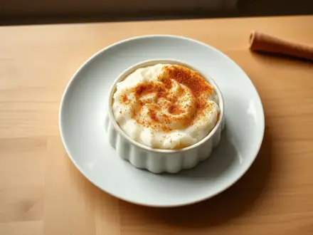
Сютлач - турецкий рисовый пудинг190 мин · 311 ккал · Б 7 г · Десерт Утка с яблоками в духовке200 мин · 714 ккал · Б 36 г · Второе блюдо
Утка с яблоками в духовке200 мин · 714 ккал · Б 36 г · Второе блюдо Торт «Муравейник» со сгущёнкой200 мин · 459 ккал · Б 6 г · Десерт
Торт «Муравейник» со сгущёнкой200 мин · 459 ккал · Б 6 г · Десерт- Домашний хлеб на дрожжах в духовке210 мин · 192 ккал · Б 5 г · Выпечка
 Баскский чизкейк260 мин · 316 ккал · Б 7 г · Десерт
Баскский чизкейк260 мин · 316 ккал · Б 7 г · Десерт Кулич пасхальный300 мин · 432 ккал · Б 9 г · Выпечка
Кулич пасхальный300 мин · 432 ккал · Б 9 г · Выпечка Яблочный зефир домашний на желатине300 мин · 206 ккал · Б 2 г · Десерт
Яблочный зефир домашний на желатине300 мин · 206 ккал · Б 2 г · Десерт Торт «Наполеон» из готового слоёного теста420 мин · 390 ккал · Б 7 г · Десерт
Торт «Наполеон» из готового слоёного теста420 мин · 390 ккал · Б 7 г · Десерт- Яичные маффины с овощами30 мин · 273 ккал · Б 20 г · Завтрак
- Рисовая запеканка с яблоком75 мин · 280 ккал · Б 8 г · Десерт
Другие подборки
- Что приготовить из курицы
- Что приготовить из фарша
- Что приготовить из мяса
- Что приготовить из рыбы
- Что приготовить из картошки
- Что приготовить из яиц
- Что приготовить из творога
- Что приготовить из кабачков
- Что приготовить из капусты
- Что приготовить из грибов
- Что приготовить из риса
- Что приготовить из макарон
- Что приготовить из гречки
- Быстрый ужин за 30 минут
- Быстрый завтрак за 20 минут
- Что приготовить на скорую руку
- ПП-рецепты: лёгкие блюда до 400 ккал
- Белковые блюда: от 25 г белка на порцию
- Дешёвые рецепты из простых продуктов
- Что приготовить ребёнку
- Постные блюда
- Блюда на пару
- Простые супы
- Простые салаты
- Выпечка и десерты
- Блюда на праздничный стол
- Что приготовить из остатков